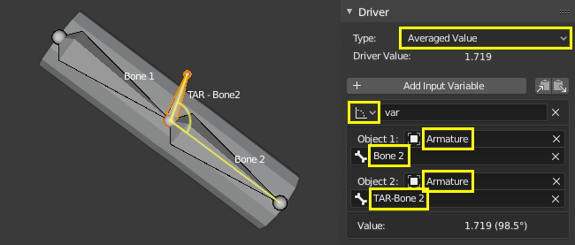
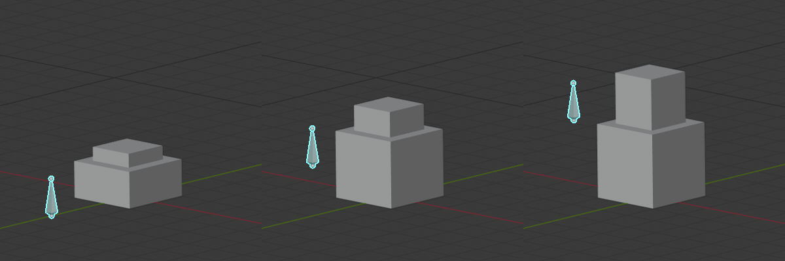

工作流程 & 范例
简单的驱动器可以通过添加新的驱动器时出现的弹出窗口进行配置。当添加多个驱动器或进行更高级的配置时，打开 驱动器编辑器 是很有用的。
变换驱动器
用一个对象的变换来控制一个属性。在这个例子中，物体2的Y旋转将由物体1的X位置驱动。从一个有两个对象的简单设置开始：
通过上下文菜单（右键菜单）或使用快捷键 Ctrl-D，在第二个物体的Y轴旋转属性上添加驱动器。

打开 驱动器编辑器，然后在左侧通道里选择 Y欧拉旋转。
打开侧栏，选择 驱动器 选项卡。
驱动器类型选择平均化值，选择 变换通道，在 物体一栏里选择第一个物体。

试着移动物体1，并注意它是如何影响物体2的。
脚本表达式——轨道点
用一个自定义的 脚本表达式 将一个物体的位置环绕一个点运行。对象的位置将在刷新时间线时发生变化。使用三角学，可以用正弦和余弦函数在2D中定义圆周运动。（详见单位圆。）在这个例子中，当前帧被用来作为诱导运动的变量。帧 是一个简单的表达方式，对应于 bpy.context.scene.frame_current。

在物体X轴位置属性上添加驱动器。
将驱动器 类型 设置为 脚本表达式。
添加表达式
0 + (sin(frame / 8) * 4)，其中：frame/8: 是但前帧数除以8，除8是为了减速。(sin( )*4): 将结果sin(frame/8)乘以4得到一个更大的圆形。0 +: 用来控制环绕轨道中心偏移量。
Add a driver to the Y Location property with the expression
0 + (cos(frame / 8) * 4).移动时间轴观察效果，尝试改变变量来影响 环绕轨道 大小和中心。
自定义函数 - 数值平方
创建一个自定义函数来获取一个值的平方（即 value2）。将该函数添加到 Driver Namespace 中，就可以从驱动表达式中使用它。Driver Namespace 有一个内置函数列表，用于驱动表达式，还有一些常量，如π和e，可以通过Python控制台查看：
>>> bpy.app.driver_namespace[' <tab>
acos']
acosh']
asin']
asinh']
atan']
...
要向 [驱动器命名空间 添加新函数，需要实现该函数本身，然后添加到 bpy.app.driver_namespace。
将以下内容添加到 Blender 内的文本编辑器中，然后按下 运行脚本。:
import bpy def square(val): """Returns the square of the given value""" return val * val # Add function to driver_namespace. bpy.app.driver_namespace['square'] = square
添加带有 脚本表达式 的驱动器，如
square(frame)。观察滑动时间线时的效果。
在Blender的文本编辑器 中有更多的自定义函数例子。由于 简单的表达方式 不能访问自定义函数，使用它们只对复杂的计算有意义。
形态键驱动器
改进网格变形
修复在使用骨骼和绘制权重时发生的交叉点问题，特别是在关节处。形态键可以调整和改进物体，例如形成肌肉。在该示例中，形态键用于改善手臂弯曲时肘部的变形。

左：网格变形未修正。右：应用形态键修正
- 配置
添加一个网格（此例中，是一个进行了环切的柱体）。
添加附带骨骼链的骨架。
使用权重绘制将网格蒙皮到骨架上。
(Note: to parent the mesh to the armature: select the mesh first, then the armature and use Ctrl-P to parent with auto weights.)
尝试改变骨骼姿态并观察关节处的形变。要修复看起来不满的交叉点或角度，可以将 形态键 与姿态关联。
- 形态键
调整骨骼姿态，把骨骼调整带你需要弯曲的最大值。
选择物体，添加形态键，除 Basis 外再添加一个形态 Key 1 。
要在骨架变形基础上创作形态键，请启用骨架修改器中的 编辑模式显示 和 编辑模式。
进入编辑模式，然后在属性面板中选择新的形态键 "Key1"，根据需要调整顶点。选择 Basis 键可在原始形状和编辑之后的形状之间切换。（注意：只对需要调整的地方进行编辑，而不是对原始网格或其它形态键进行编辑。）
当你调整好形状后，要配置一个驱动器，以便可以平滑的改变形状。
- 驱动器
在形态键的 值 上添加驱动器。
打开驱动器编辑器并选择驱动通道。
- 方法 1 -- 直接映射到骨骼旋转值
一种简单的方法是将骨骼的旋转属性直接与形态键 值 对应。缺点是依赖单一数值，不足以精确的控制形态键的激活条件。
在Drivers（驱动）选项卡中，选择你正在摆放的骨骼的旋转的 平均值 。
通过在骨架中启用轴线显示或在属性中观察骨骼的变换值，了解你感兴趣的旋转轴。
选择旋转通道，间隔设置为自身空间，即骨骼相对于父骨骼的旋转值。

选择曲线控制柄并拖动它或者在 函数曲线 选项卡中输入数值。Y 轴表示形态键的 值，范围是 0.0 到 1.0。X 轴通常是帧数，但在此驱动器中它表示以弧度制的旋转值。曲线中有两个以上的点，使用曲线视图中的控制柄调整过渡（G 移动）。
要验证驱动器是否正确运行，请取消选择选项以仅显示所选物体的驱动器。这样，你可以摆好骨架，并留意驱动器。
- 方法 2 -- 与目标骨骼的旋转差值
这种方法需要额外的 目标 或 矫正 骨骼，但它能更好地表示骨骼在3D空间中的条件。
在骨骼编辑模式中，从骨骼1中挤出新骨骼，在骨骼2形态键值为1的位置。目标骨骼通常有约定的命名方法，例如 "TAR-" (目标)或 "COR-" (矫正)。
在 驱动 选项卡中，选择你要旋转的骨骼和目标骨骼之间的旋转差的 平均值 。旋转差是世界空间中两个物体之间的最小角度。因此，重要的是，骨头有相同的根，因此，影响骨头之间角度的唯一事情是其中一个骨头的旋转。当变形骨（Bone 2）达到目标旋转（TAR-Bone 2）时，旋转差将是0°。
 手动调整函数曲线，使当旋转差（X 轴）为 0° 时，形态键 值（Y 轴）为 1.0。当臂伸直时，形态键值为 0.0，此时旋转差值约为 90° 或更大（以弧度制表示）。
请参照方法1中有关如何调整控制柄并确认功能正确的步骤。调整骨骼查看设置范围是否正常。
链式相对形态键
连续激活不同的形态键。在此例中，移动单个骨骼将激活第一个 Key 1 后激活 Key 2 。另参见 相对或绝对形态键。
- 形态键
除了 Basis 之外，还为网格添加了两个形态键。

Basis（基型）。 |

键1：顶面向上移动1米。 |

键2：内顶面向上移动1米。 |
- 驱动
添加单段骨骼用来控制形态键。目的是骨骼向上移动的过程中连续激活形态键。
 如上图所示，当骨骼处于一半位置时，Key 1 和 Key 2 都会产生影响。这是一个偏好问题，如果 Key 1 在达到最大值之前，Key 2 便被激活，那这俩还是多少有些重叠的部分。此例是无缝混合。
对于有重叠的无缝混合，当骨骼在低位置时，Key 1 的值为0.0，随着骨骼升高到中点高度，线性增加至1.0。Key 2 在骨骼到达中点高度之前的值为0.0，然后与 Key 1 相同的速率增加，直到骨骼到达最高点，其值变为1.0 。
在 Key 1 和 Key 2 上添加驱动器。在 驱动器 选项卡中，类型选择 "平均化值"，驱动器变量类型为 "变换通道"，物体为骨骼，类型Z位置。
确定骨骼在世界Z轴上的运动范围，将其向上移动，使其在两个键都激活时与网格的顶部对齐。这里我们将使用（0.0, 2.5）。
配置驱动器，形态键（Y 轴）与骨骼期望的高度（X 轴）对应。
驱动函数应该是线性的，因此，它们可以脚本表达式来定义 \(y = a + bx\)，其中 \(b\) 是斜率，\(a\) 是截距。
在 修改器 选项卡中，为两个驱动器添加 生成器 修改器。
玩弄 \(a\) 和 \(b\) 的值，使曲线在 Y 轴上从（0.0, 1.0），在 X 轴上从（0.0, 2.5）。曲线应该在 X 轴的中间区域重叠，它们应该有相同的斜率（\(b\)）。
得出公式 Key 1: \(y = 0.0 + 0.6x\) 和 Key 2: \(y = -0.5 + 0.6x\)。

请注意，这些函数超出了形态键 值 的范围（0.0, 1.0），但这没有影响，因为 值 被钳制在 形态键 面板的 范围 内。